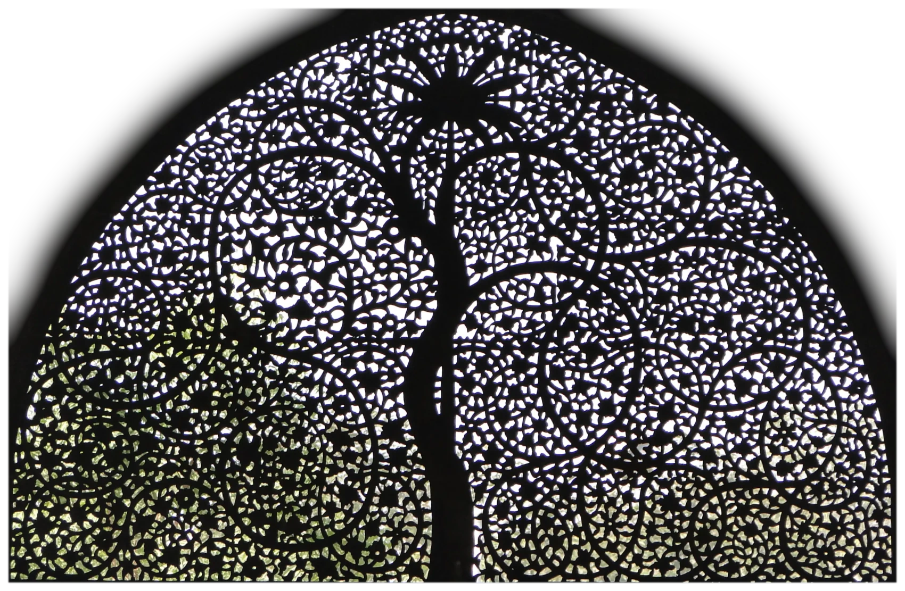
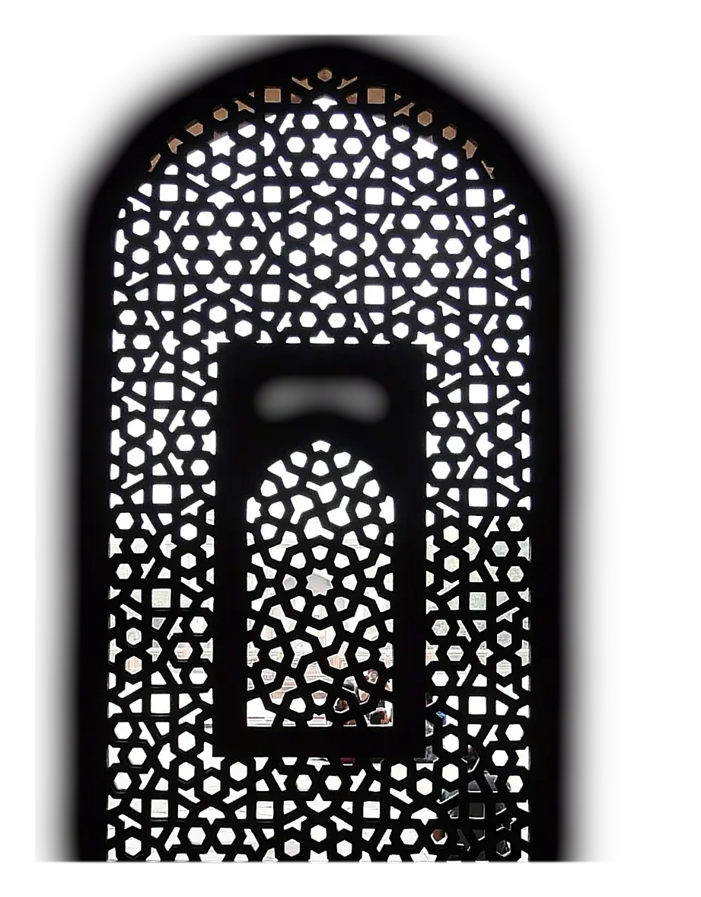
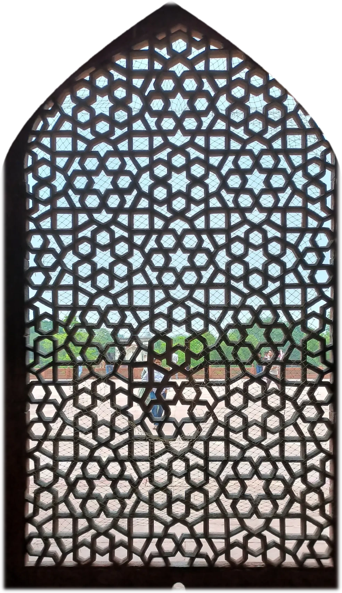
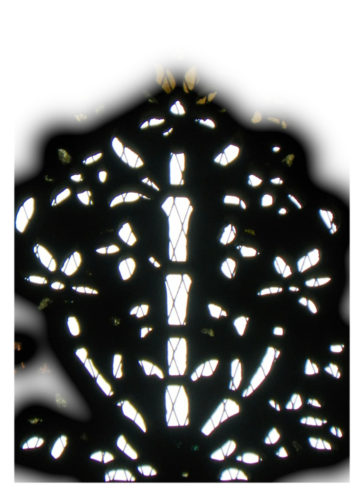

A jali is a window cut from a single slab, and the cutting is the whole design. The sun does the rest: it falls through the stars and polygons, and the floor becomes a second, brighter screen.
Walk along the wall and the day goes with you. Each window throws its lace at the angle of its own hour, sharp as the stone near the sill, melting into warm glow across the room.